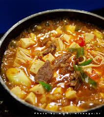

Soybean Paste Soup

Description
One of the most simple and quick dishes I learned to make while in Korea.
Doenjang is a fermented soybean paste that can be found in Asian grocers.
Good for those who are hungover as well.
Ingredients
- 3 cups vegetable stock
- 3 cups water
- 2 cloves garlic, coarsely chopped
- 2 tablespoons Korean soy bean paste (doenjang)
- 4 green onions, chopped
- 1 zucchini, halved and cut into 1/2-inch slices
- ½ (16 ounce) package firm tofu, drained and cubed
- 1 jalapeno pepper, sliced
Directions
-
Bring vegetable stock and water to a boil in a saucepan over high heat.
-
Stir in garlic and soy bean paste, stirring until the paste dissolves.
Stir in the green onion, zucchini, tofu, and jalapeno.
-
Allow soup to return to a boil, then reduce heat to low and simmer for 15 minutes.
Home